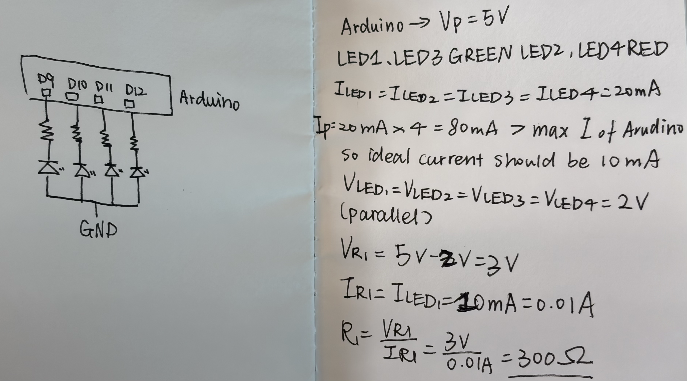
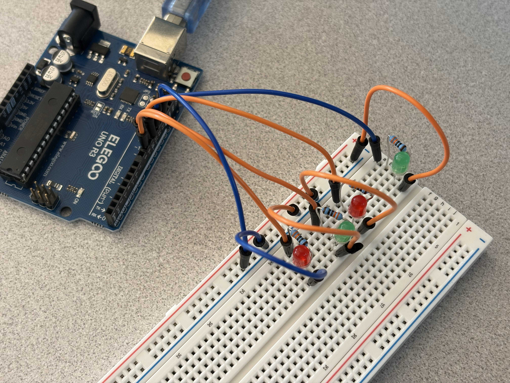
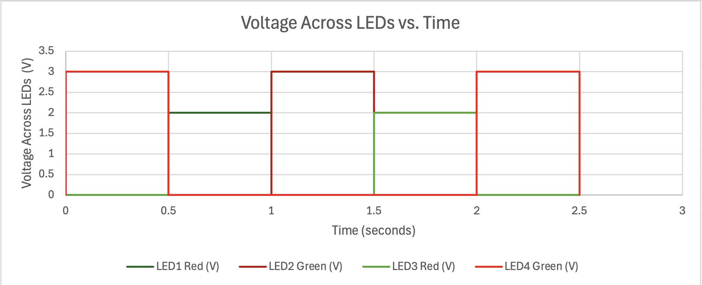

For this assignment, I created a holiday-themed light show using four LEDs (two red and two green), an Arduino Uno R3, resistors, and a breadboard. Each LED is connected to a separate digital output pin, allowing the LEDs to blink independently. I programmed a sequence where pairs of lights alternate, followed by each LED lighting up individually.

style="max-width: 100%; height: auto;" />I used Ohm's Law to calculate appropriate current-limiting resistors. I assumed a 5V Arduino output and selected a target current of 10mA (0.01A) per LED.
The resistance is calculated using:
R = (Vsource - Vled) / I
Red LEDs: Assuming a forward voltage of 2V:
R = (5V - 2V) / 0.01A = 300 ohms
Green LEDs: Assuming a forward voltage of 3V:
R = (5V - 3V) / 0.01A = 200 ohms
I chose 330-ohm resistors for all four LEDs to limit the current. With these resistors, the estimated current is approximately 9.1mA for each red LED and 6.1mA for each green LED, based on the assumed forward voltages. The actual current depends on the specific LEDs.

I wrote Arduino firmware to create a repeating light pattern. The sequence starts with alternating pairs of LEDs and continues with each LED turning on individually. The code uses digitalWrite() to control the LEDs and delay() to determine the duration of each stage.
// Define the digital pin for LED1 (red).
#define PIN_LED1 12
// Define the digital pin for LED2 (green).
#define PIN_LED2 11
// Define the digital pin for LED3 (red).
#define PIN_LED3 10
// Define the digital pin for LED4 (green).
#define PIN_LED4 9
// Run the setup function once when the Arduino starts.
void setup() {
// Configure LED1 as an output.
pinMode(PIN_LED1, OUTPUT);
// Configure LED2 as an output.
pinMode(PIN_LED2, OUTPUT);
// Configure LED3 as an output.
pinMode(PIN_LED3, OUTPUT);
// Configure LED4 as an output.
pinMode(PIN_LED4, OUTPUT);
}
// Repeat the holiday light pattern continuously.
void loop() {
// Turn on LED1.
digitalWrite(PIN_LED1, HIGH);
// Turn off LED2.
digitalWrite(PIN_LED2, LOW);
// Turn on LED3.
digitalWrite(PIN_LED3, HIGH);
// Turn off LED4.
digitalWrite(PIN_LED4, LOW);
// Immediately move to the next pattern.
delay(0);
// Turn on LED2.
digitalWrite(PIN_LED2, HIGH);
// Turn off LED1.
digitalWrite(PIN_LED1, LOW);
// Turn on LED4.
digitalWrite(PIN_LED4, HIGH);
// Turn off LED3.
digitalWrite(PIN_LED3, LOW);
// Wait for 500 milliseconds.
delay(500);
// Turn on LED1.
digitalWrite(PIN_LED1, HIGH);
// Turn off LED2.
digitalWrite(PIN_LED2, LOW);
// Turn off LED3.
digitalWrite(PIN_LED3, LOW);
// Turn off LED4.
digitalWrite(PIN_LED4, LOW);
// Wait for 500 milliseconds.
delay(500);
// Turn off LED1.
digitalWrite(PIN_LED1, LOW);
// Turn on LED2.
digitalWrite(PIN_LED2, HIGH);
// Keep LED3 off.
digitalWrite(PIN_LED3, LOW);
// Keep LED4 off.
digitalWrite(PIN_LED4, LOW);
// Wait for 500 milliseconds.
delay(500);
// Keep LED1 off.
digitalWrite(PIN_LED1, LOW);
// Turn off LED2.
digitalWrite(PIN_LED2, LOW);
// Turn on LED3.
digitalWrite(PIN_LED3, HIGH);
// Keep LED4 off.
digitalWrite(PIN_LED4, LOW);
// Wait for 500 milliseconds.
delay(500);
// Keep LED1 off.
digitalWrite(PIN_LED1, LOW);
// Keep LED2 off.
digitalWrite(PIN_LED2, LOW);
// Turn off LED3.
digitalWrite(PIN_LED3, LOW);
// Turn on LED4.
digitalWrite(PIN_LED4, HIGH);
// Wait for 500 milliseconds.
delay(500);
}

The graph illustrates how each LED changes between its on and off states. The very short initial state is modeled as having zero delay, so it is not visible as a sustained interval on the graph.
The Arduino Uno R3 has 14 digital I/O pins (D0-D13), so it can theoretically control 14 LEDs independently using those pins. If each LED draws 10mA, the total current for 14 LEDs would be 140mA when all are on.
The six analog pins (A0-A5) can also function as digital outputs, giving up to 20 independently controlled outputs in theory. However, D0 and D1 are normally used for serial communication, and the Arduino has per-pin and total current limits. Driving 20 LEDs at 10mA each would require 200mA, which is not a safe operating target for the Uno's microcontroller. External driver circuitry would be needed for larger LED installations.
I tested different blinking speeds using my existing Arduino circuit. I gradually decreased the delay between turning an LED on and off.
In my experiment, the LED appeared continuously lit when the on-time and off-time were each approximately 10 milliseconds.
One complete cycle = 10ms + 10ms = 20ms
Frequency = 1000ms / 20ms = 50Hz
Based on my observation, the flicker fusion threshold was approximately 50 flashes per second under my testing conditions. This threshold can vary depending on the person, LED brightness, and environment.
Yes, I used ChatGPT during this assignment. I used it to better understand the assignment requirements, review my resistor calculations, troubleshoot Arduino pin connections, and understand how to represent the LED blinking pattern in a voltage-versus-time graph. I also used it to help organize and write the documentation for my website.
AI was particularly helpful when I encountered problems with my circuit and needed to understand the possible causes. However, I assembled and tested the physical circuit myself and experimented with different blinking speeds. This assignment helped me better understand Ohm's Law, digital output pins, independent LED control, and the relationship between delay and blinking frequency.